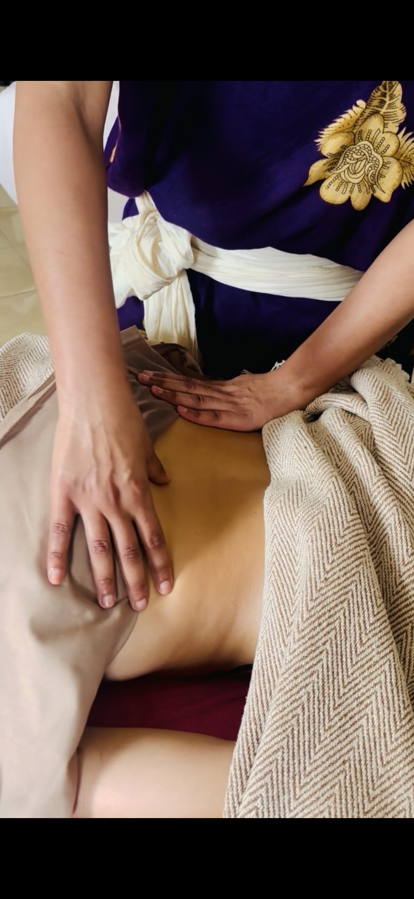
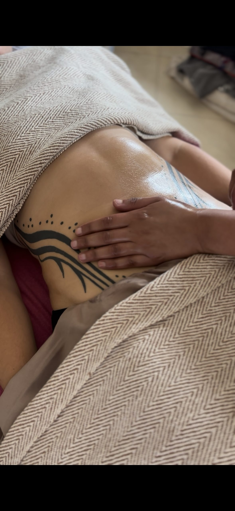

Somatic Treatments
More than a treatment. Each ritual combines ancient wisdom with the art of touch — to restore, release, and return the body to itself.

Womb Ritual · Mizan Therapy
Mizan abdominal therapy — rooted in ancient healing wisdom
Initial session — includes consultation
Follow-on sessions
A gentle, deeply restorative abdominal massage drawing on Mizan therapy — a tradition rooted in Mayan and ancient healing wisdom. The treatment works on the abdomen, sacrum, and lower back to encourage healthy blood flow to the uterus and surrounding organs, release tension held in the pelvic bowl, and support the body's natural rhythms.
In many healing traditions, sluggish circulation and tension in the pelvic region are understood to be at the root of a wide range of cyclical complaints. By warming the area, encouraging movement of stagnant blood, and gently supporting the positioning of the uterus, this treatment aims to restore flow where the body has become stuck.
Women come for this treatment when they experience:
painful or heavy periods · irregular cycles · pelvic tension and cramping · PMS and PMDD symptoms · bloating and digestive discomfort · low back pain linked to the cycle · postnatal recovery support
This is a holistic complementary therapy, not a medical treatment. Please consult your GP if you have a diagnosed condition such as endometriosis, adenomyosis, PCOS, or fibroids before booking.
Womb Ritual · Conception Support
Abdominal therapy for reproductive wellbeing
Initial session — includes consultation
Follow-on sessions
A focused abdominal massage for women who are preparing their bodies for conception, supporting an IVF or IUI cycle, or coming off contraception and wanting to reconnect with their cycle.
The treatment works by encouraging circulation to the uterus and ovaries, releasing tension in the diaphragm and pelvis, and supporting the nervous system. Many women find it a valuable part of a broader approach to reproductive health — alongside acupuncture, nutrition, or medical fertility support.
This is not a fertility treatment and does not diagnose or resolve underlying medical causes of infertility. What it offers is a space for the body to receive deep, intentional care during what is often a physically and emotionally demanding time.
Women come for this when they are:
preparing for natural conception · supporting an IVF or IUI cycle · coming off the pill and rebalancing their cycle · dealing with irregular or absent periods · recovering from miscarriage and preparing to try again
Always consult your doctor or fertility specialist before booking if you are undergoing assisted reproduction.

Body Treatment
Brazilian MLD technique · Bespoke & Ayurvedic
Using the Brazilian MLD technique, this bespoke massage works on supporting the body's natural lymphatic flow and leaving you feeling lighter and smoother. The oil is heated and poured onto the stomach first to support comfort and ease.
The oil is packed with powerful Ayurvedic ingredients — turmeric, ashwagandha, and sesame oil — which deeply moisturise the skin and complement the massage beautifully.
This is a holistic treatment, not a medical procedure.
The 90-minute session can include either an express facial ritual (30 min) or an extended body massage — your choice.
Body Treatment · Postnatal
Gentle · Restorative · Nourishing
A nurturing adaptation of the lymphatic drainage massage, designed with new mothers in mind. The same Brazilian MLD technique is used, with extra care and gentleness to support the body's natural recovery after birth.
The focus is on gentle, supportive touch that helps you feel restored, lighter, and cared for during the postnatal period.
This is a holistic treatment, not a medical procedure. Please consult your midwife or GP before booking if you have any concerns.
Body Treatment · Post-Operative
Brazilian MLD · Organic Arnica Oil
Brazilian-style lymphatic drainage massage to help support the body's natural recovery after surgery and reduce the feeling of water retention. Organic arnica oil is used throughout to help soothe and nourish the skin during the healing process.
For best results, I recommend starting as soon as you are cleared by your surgeon and booking multiple sessions close together.
This is a holistic treatment, not a medical procedure. Always follow your surgeon's guidance before booking.
Session Packages
Every facial includes neck, head, and shoulder work, because the face doesn't fully release while there's tension held elsewhere. Your booked time is treatment time. Arrival and check-in aren't taken from it.
An intuitive massage working acupressure points across the jaw, temples, and face, in the areas where major facial nerves surface close to the skin, particularly around the trigeminal and facial nerve pathways that govern sensation and expression. Sustained, gentle pressure and slow rhythmic strokes in these areas are used in both somatic bodywork and traditional Chinese facial massage to encourage the body to shift out of a stressed, alert state and into a calmer one.
Many people carry tension unconsciously in the jaw, brow, and temples, clenching, gritting, frowning, and this treatment works directly with that pattern rather than around it.
✦ Best for chronic jaw tension, teeth grinding, headaches that start behind the eyes or temples, and anyone whose stress shows up physically in their face before anywhere else
A structured, rhythmic massage technique using upward and outward strokes to work the muscles of the face and neck. Encourages circulation and muscle tone, and leaves the skin looking more awake and defined immediately after the session.
✦ Best for those wanting a firmer, brighter look without any product intervention, and for anyone who prefers touch-based technique over facial devices
Traditional tools used to work along the jaw, cheeks, and brow. Gua sha's flat edge sweeps along the muscle to ease tightness and encourage circulation; the cupping lifts the skin gently to release fascia that's become stuck or tight, often from screen posture or one-sided chewing. A grounding, tactile treatment.
✦ Best for jaw tension, tightness, a dull or tired complexion, and visible tension lines across the forehead
Slow, precise drainage strokes across the face, jaw, and neck following the direction of the lymphatic pathways, to support fluid movement and ease puffiness. Particularly suited to mornings when the face feels heavy or swollen, or after travel, poor sleep, or a salty meal the night before.
✦ Best for congestion, morning puffiness, post-travel or pre-event skin
A warm, rhythmic massage of the scalp, neck, and shoulders, rooted in Ayurvedic tradition. Works through built-up tension in the scalp and upper back while calming the mind, often inducing a state close to sleep by the end of the session.
✦ Best for mental fatigue, headaches held in the scalp, and general stress release, particularly for anyone doing screen-heavy or desk-based work
Double cleanse, exfoliation, mask, and moisturiser, paired with 30 minutes of facial or body massage of your choice (lymphatic, lift, or relaxation). A full facial with a therapeutic edge, combining proper skin care with hands-on bodywork rather than product application alone.
The most complete facial on offer. Double cleanse, exfoliation, steam, mask, moisturiser, and SPF, combined with lymphatic and natural lift massage techniques to support lymph flow, ease puffiness, and gently lift the facial contours.
✦ Best for first-time visitors, high stress, or pre-occasion glow, and for anyone who wants both proper skincare and bodywork in one session rather than choosing between them
Create Your Own
Mix and match any of the above, or combine with a body lymphatic drainage treatment. For example: 30 min facial massage + 30 min body lymphatic drainage, or 30 min Indian head massage + 30 min cleanse, exfoliation, and steam. Gua sha and cupping can be added to any treatment at no extra cost.
Pricing
Packages